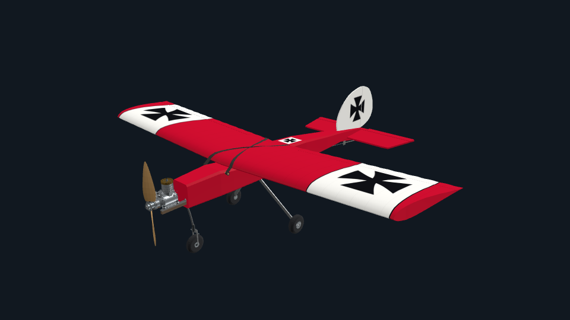

Un motor de vuelo propio.
Seis grados de libertad y cálculo en float64. Cargas aerodinámicas locales, dinámica de servos y propulsión según cada avión.

FIG. 01 JENSEN DAS UGLY STIK 60Tu emisora. Tu próximo vuelo.
Un simulador RC que construimos en abierto.
01 / EL HANGAR
Del clásico de madera al jet.
Cinco aviones de ala fija en el código actual, cada uno con su propia configuración.
EL CLÁSICO
Ala alta, líneas sencillas y toda la personalidad del aeromodelismo. El avión de referencia con el que empieza OpenRC.
CATÁLOGO DEL CÓDIGO ACTUAL. Los modelos son experimentales y todavía requieren mediciones y validación de pilotos. La descarga v0.1.1 corresponde a su propia versión publicada.

02 / NOS VEMOS EN LA PISTA
La pista de césped. Los árboles al fondo.
Vuela desde la posición del piloto o sigue el avión con las cámaras de vuelo.
03 / BAJO EL CAPÓ
Construimos un simulador de aeromodelismo paso a paso. Con código que puedes leer, vuelos que puedes repetir y preguntas que aún estamos resolviendo.
Explora el códigoIMPLEMENTADO EN EL CÓDIGO ACTUAL
Seis grados de libertad y cálculo en float64. Cargas aerodinámicas locales, dinámica de servos y propulsión según cada avión.
Emisora USB, gamepad o teclado. Calibración guardada, armado de motor y respuesta segura al desconectar.
Registros de vuelo, reproducción exacta y exportación CSV para estudiar el comportamiento con las mismas entradas.
04 / TU PRÓXIMO DESPEGUE
v0.1.1 / EARLY ALPHADescarga, extrae el ZIP y abre el simulador.
No necesitas instalar Godot.
Versión publicada v0.1.1. Paquetes sin firma de desarrollador.
Las novedades del código actual pueden no estar incluidas.
UN PROYECTO ABIERTO, UN TRABAJO COMPARTIDO.
Una prueba con tu emisora. Una medición real. Una mejora en el código. Cada contribución ayuda a construir el siguiente vuelo.
Participa en GitHub ↗Comparte tu experiencia ↗